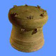
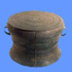
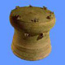
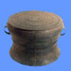
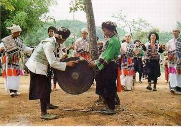
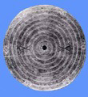
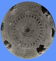
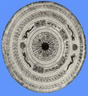
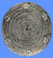

北流型冷水冲型灵山型麻江型石寨山型西盟型遵义型
北流型冷水冲型灵山型麻江型石寨山型西盟型遵义型

说到铜鼓，广西应算是铜鼓之乡，千百年来，铜鼓的话题在八桂大地上传唱了一遍又一遍。它的神奇文化在南方少数民族历史舞台上扮演了重要的角色，留下许多动人的故事和传说，是广西民族文化的优秀代表，也是广西地方文明史的一个重要组成部分。
广西之有铜鼓，至少可以追溯到春秋、战国时期。20世纪70年代以来，广西考古工作者在考古发掘中不断发现有铜鼓出土，如1977年、1993年相继在百色右江河谷田东县发掘出春秋、战国墓葬中有多面早期铜鼓；1972年在西林县修路时也在一座汉代古墓中出土了数面铜鼓；1976年在贵县（今贵港市）罗泊湾的汉墓发掘中也发现有铜鼓3面。近百年来，文物工作者在广西进行文物调查中发现，几乎遍布整个广西各地市县都有铜鼓发现，或是墓葬出土，或是零星发现，或是民间传世等，其中尤以广西北流、桂平、藤县、玉林、浦北、东兰、大化、横县等市县最为密集。据统计，到目前为止，广西各级文物管理部门收藏铜鼓已达700多面，其中广西博物馆拥有铜鼓360多面，富甲一方，成为世界上收藏铜鼓最多的博物馆。此外，红水河流域民间收藏铜鼓就有1100多面，仅东兰县金谷乡就独占120多面，大化瑶族自治县板升乡也有106面。值得一提的是，广西在进行农事劳作或兴修公路、水利时，常有铜鼓出土，每年约呈10面递增，估计广西现拥有铜鼓2000面以上，约占全国铜鼓总数的2/3还强，居全国首位。
广西为何有如此众多的铜鼓？铜鼓是怎么来的？一直是个谜，由此，民间有许多传说。隆林苗族人传说，铜鼓是海龙王送给他们的宝物；壮族人则认为铜鼓是他们开天辟地的老祖宗布洛陀制造的，还有传说铜鼓是天上雷公造的。南丹白裤瑶人的传说挺有意思，提到铜鼓是猴王送来的。传说很久以前，有一瑶族老人到地里收割黄豆，由于劳累过度，就躺在黄豆杆堆里睡着了；这时，有一母猴领着一群小猴来偷吃黄豆，将睡在黄豆杆堆里的老人误认为是它们死去的祖先，按照猴子的习惯，老猴死了要敲打铜鼓祭祀；这样，母猴传令小猴进山把铜鼓抬来，向“祖先”祭奠，铜鼓敲响了，所有的猴子都围拢过来跳舞，老人被铜鼓声震醒了，看见那么多猴子，有些惧怕，突然大喊一声，并从黄豆杆堆站起来，猴子们惊呆了，母猴尖叫一声，猴子们丢下铜鼓四处逃散，跑回山上去了。老人把铜鼓背回村寨，从此，世代相传，铜鼓是猴王送来的。当然，还有许多传说故事，但传说归传说，其实铜鼓既不是龙王送给，也不是猴王送来的，而是人打造的。据东兰县一些老人回忆，过去，东兰就有人来铸造过铜鼓，铸鼓匠师都是从庆远府（今宜州市）等地过来的，据说这些铜鼓匠师如同今天的补锅匠，带着徒弟、工具走村串寨，哪里有需要铸造铜鼓，就在哪里安炉铸造。就这样，铜鼓是一代又一代的人铸造，一代又一代流传，这才有了如此众多的铜鼓。遗憾的是，铜鼓铸造工艺今已失传，如今已没有人会铸造铜鼓，也找不到铸造铜鼓的遗迹。目前，世界上发现的最大和最小的铜鼓均在广西。号称世界“铜鼓王”的云雷纹大铜鼓，一直是广西博物馆的“镇馆”之宝，天天与观众见面，许多游人把它当成铜鼓中的“明星”，纷纷与它合影留念；最小的铜鼓应是1990年在灵山县新圩镇出土的两面如拇指般大的铜鼓，现存于灵山县博物馆，有专家认为它是一种铜鼓形饰物。
广西不仅铜鼓数量多，而且种类齐全。专家们根据铜鼓的形态、纹饰等特点把铜鼓分为八个类型，其中以广西出土的标准器命名的就有三种类型，即冷水冲型、灵山型和北流型。其他类型的铜鼓广西都有发现，广西铜鼓贯穿了整个铜鼓的发展史。1963年，著名考古学家、历史学家郭沫若先生参观广西博物馆举办的铜鼓展览时，对广西收藏的铜鼓赞赏不已，当即写下了《满江红》词，称赞广西铜鼓是“壮家文化”。数十年来，国内外领导和嘉宾到广西，都要来参观广西博物馆的铜鼓展览，该展览展出铜鼓之齐全、内容之丰富，是目前铜鼓展览中规模最大、层次最高的一个。前几年，香港文汇报几位记者到广西参观古代铜鼓陈列展览，回到香港后，以《古时一鼓易千牛，如今价值难以计，广西铜鼓最多，南宁展出傲视全球》为题，著文介绍广西收藏和展出铜鼓的盛况。广西铜鼓展览曾作为文化使者三次运到北京展览，轰动京城。2001年9月，中央电视台海外电视中心专题部特地到广西录制了铜鼓专题片，向海外传播，引得许多海内外游人争相到广西博物馆观看铜鼓展览。
广西铜鼓多，研究铜鼓的学者也非常活跃。以1980年在南宁召开的第一次中国古代铜鼓学术讨论会为标志，20多年来，广西学者从铜鼓的起源、类型、分布、年代、族属、纹饰以及铸造工艺等方面进行全方位研究，取得了丰硕的成果，出版了多部研究铜鼓的专著和论文，如《铜鼓史话》、《铜鼓艺术研究》、《中国古代铜鼓科学研究》、《北流、灵山型铜鼓调查报告》等等，通过这些研究和论述，铜鼓神秘的面纱正慢慢被撩开。铜鼓研究集大成者应数广西博物馆研究员蒋廷瑜先生，他著有《铜鼓》、《古代铜鼓通论》等著作多部，是目前国内外铜鼓研究的大腕。同时，中国古代铜鼓研究会就设在该馆，不但有老专家，还有一批中青年学者，人才辈出，为世人瞩目。
近年来，因铜鼓而衍生出来的铜鼓文化正逐渐引起人们的关注。人们不断从报纸、杂志、电视或商品宣传广告上看到一座精美的铜鼓雕塑群，这个坐落于广西博物馆民族文物苑的铜鼓雕塑群，就是仿几种不同类型的铜鼓雕塑而成，高达16米多，如今已成为一个旅游观光点，几乎成了广西的标志；南宁青秀山上搭建的南宁国际民歌艺术节演出舞台就叫铜鼓歌台，闻名遐迩；百色市在有百色起义纪念馆的迎龙山上兴建了世纪铜鼓广场，在广场中央建起铜鼓楼，楼上悬挂有一个大铜鼓，每日鼓声阵阵，游人如织，成了革命老区一个旅游景点；以铜鼓派生出文化的，还有河池地区铜鼓山歌艺术节，该节每年岁末年初时在河池地区举行一次，给该地区旅游业注入了新的内容；以演奏铜鼓音乐为主的河池地区铜鼓艺术团更是忙乎，上北京、到上海、飞美国、赴日本，演出一场比一场红火，是一道亮丽的民族文化风景线。值得一提的是，广西有许多地方因铜鼓而得名，如地处桂平市的黔江和郁江交汇处，有一险滩，白浪滔滔，绵延数公里，自宋代以来，渔人不断在滩上网得铜鼓，人们便称其为铜鼓滩，最近，捕渔者在该滩上又先后网起两件西周时期的编钟，铜鼓滩变成了文物滩。广西境内取铜鼓作地名的还有很多，如北流市有铜鼓潭，博白县有铜鼓湾，宜州市有铜鼓岩，钦州市有铜鼓岭；仅灵山县内铜鼓地名就有 20多处，或称村、岭，或叫江、滩、塘，还有叫铜鼓圩、街、路等，不一而足，这些都因铜鼓而得名，足见广西人对铜鼓的挚爱之情。
铜鼓，这历经千年的文化瑰宝，还将在八桂大地上永远传承，谱出一曲永无止境的壮丽乐章。
北流型冷水冲型麻江型灵山型